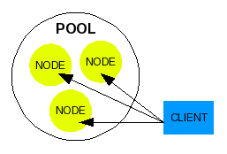
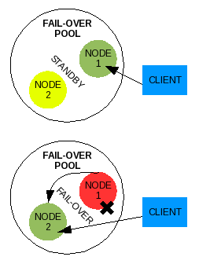
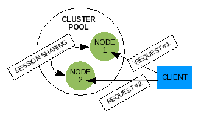
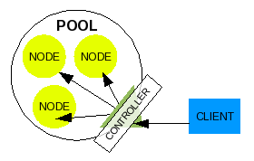
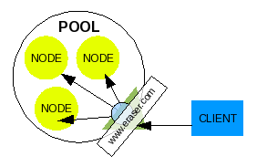
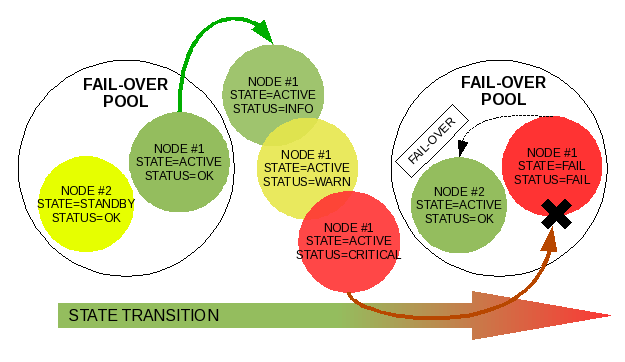
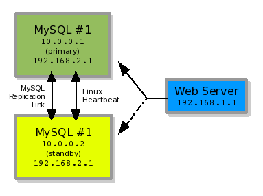
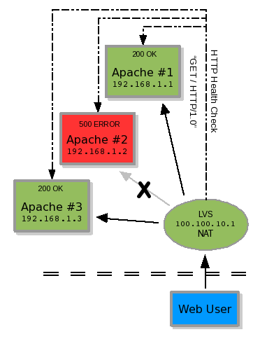
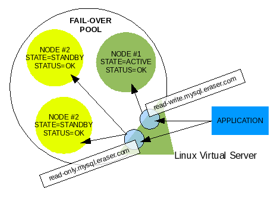
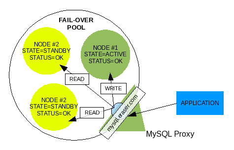

By Russell E Glaue
Having a strategy for failover has become almost standard in the business world. Whether it is a total site failover from a NOC in one city to another, or just a simple redundant server. Over the years many technology solutions have been created for or adopted to MySQL to provide this type of strategy.
INTRODUCTION
There are several technologies available today for pooling multiple instances of MySQL into a general cluster or failover solution. Several solutions are listed below in brief summary. Following this are some basic terms used in general cluster and failover ideas.
OVERVIEW OF TECHNOLOGY FOR MYSQL CLUSTERING AND failover
MySQL NDB Clustered Storage Engine
http://dev.mysql.com/doc/refman/5.1/en/mysql-cluster-overview.html
http://www.mysql.com/products/database/cluster
Developed by MySQL AB for the MySQL Server, this solution is entirely memory based and differs entirely from the traditional disk based MySQL Storage Engines.
An advantage is that this is maintained and Supported by the MySQL Community, and is fast.
A disadvantage is that the entirely memory based clustering engine The memory requirements for each individual node participating in a MySQL Cluster would be the equation of twice the size of stored data in the database +10% divided by the number of nodes (single node ram requirements = (SizeOfDatabase * NumberOfReplicas * 1.1) / NumberOfDataNodes)”
Beginning with MySQL 5.1.6, it is possible to store the non-indexed columns of NDB tables on disk rather than in RAM as with the previous version of MySQLCluster. However 5.1.6 still requires indexed fields including the primary key hash index to be stored in RAM.
MySQL 5.1 Carrier Grade addresses this limitation in MySQL Cluster further. http://www.mysql.com/products/database/clustercge
Continuent uni/cluster and m/cluster products (Commercial)
http://www.continuent.com/
Continuent provides a product(s) to cluster mysql similar to a multi-node cluster with heartbeat. But is more sophisticated by replicating SQL modification statements to all nodes, rather than rely on MySQL replication, and controlling the failover strategy. This product specific to MySQL is termed m/cluster . It also provides a clustering technique similar to Sequoia termed uni/cluster .
Certainly if you want a company backing your MySQL cluster who you can hold accountable, you may wish to choose their product.
Sequoia (Formerlly known as C-JDBC from ObjectWeb)
https://forge.continuent.org/projects/sequoia
Developed originally by ObjectWeb, it has taken off as an Apache2 licensed solution now termed Sequoia. It is an entirely JDBC/ODBC solution for clustering JDBC/ODBC compliant database servers.
Sequoia is a transparent middleware solution offering clustering, load balancing and failover services for any database. Sequoia is the continuation of the C-JDBC project. The database is distributed and replicated among several nodes and Sequoia balances the queries among these nodes. Sequoia handles node and network failures with transparent failover. It also provides support for hot recovery, online maintenance operations and online upgrades.
DRBD for MySQL High Availability
http://www.mysql.com/products/enterprise/drbd.html
DRBD for MySQL is a high availability solution that combines MySQL, Linux Heartbeat, and Distributed Replicated Block Device (DRBD) so organizations can cost-effectively deliver High Availability (HA) database solutions.
An advantage is that the data replication is handled by DRBD, and does not require any replication by the MySQL processes to keep both nodes in sync. Additionally if one node is down for a long time, when brought back online, DRBD can bring it back into full synchronization in a very short time.
A disadvantage to this solution is DRBD currently only supports 2 nodes in its open source version, and the 2 node solution should reside on the same local network and not used between two separated sites.
Linux Heartbeat / High Availability
http://www.linux-ha.org
Linux Heartbeat which is part of the High-Availability Project is a traditional method used for configuring a failover scenario. One server is the primary server taking requests. The second server is on standby receiving replication from the primary. Once the primary has a hardware failure and a heartbeat can no longer be detected by the secondary server, then the secondary server takes over the application IP and serves requests in the primary's place.
The advantage is that this is a widely used and tested scenario. DRBD and Heartbeat are both the most common mechanisms used for failover. Also, only the two participating server nodes need to have the heartbeat software installed.
A disadvantage is that it is a one-server-up solution. The first server must come into error and be configured to give up use of the application IP to the secondary server. The High-Availability project is designed to do this.
EddieDNS
http://eddie.sourceforge.net/lbdns.html
A Load Balancing DNS that allows for distributed services by resolving domain names to IP numbers across distributed multi-location server sites.
Primarily this solution is used to distribute traffic between multiple colocations by resolving a domain name(s) to IP number(s) for all configured colocations in turn to balance traffic among them.
MPP (MySQL Pool-Poller) - The Topic of this Article
http://codepin.cait.org/project/mpp
MPP is a MySQL State Manager. It is intended to be used in combination with any load balancing or traffic distribution management software. Its use has been tested in combination with Linux Virtual Server, Red Hat Cluster (Piranha), and F5 Networks BigIP. There is a plan to test its use with MySQL Proxy. This software allows the configuration of MySQL servers into a pool. The configured pool is managed based on a logic that is assigned to it. MPP currently supports a generic failover logic, and has intentions to eventually support a generic cluster logic.
The advantage of this software is that it is a scenario management application, managing a pool of MySQL servers, leaving the implementation of the logic results to a 2nd party application. MPP allows itself to be plugged into any 2nd party Load Balancing or Traffic Management software that can make external calls to scripts or which can implement REST based plugins. The Load Balancing and Traffic Management software is what executes the real implementation. So in theory, under an advanced technology configuration, MPP can be combined with several technologies to create a useful failover or cluster configuration.
The disadvantage is that the code is fairly new as of this proof-of-concept release, and needs to be well field tested by many deployments and then fine tuned and optimized. Although already field tested and proven to work, it is only in its initial version and still has room for improvement.
MySQL Proxy
http://forge.mysql.com/wiki/MySQL_Proxy
MySQL Proxy is a simple program that sits between your client and MySQL server(s) that can monitor, analyze or transform their communication. Its flexibility allows for unlimited uses; common ones include: load balancing; failover; query analysis; query filtering and modification; and many more.
Testing MPP usage with MySQL Proxy is currently underway, and is the topic of the future Part 3 of this article. There are plans for MPP's eventual integration.
Other Useful Resources
Linux Virtual Server from UltraMonkey.org
Red Hat Cluster Suite (a.k.a. Piranha) based on Linux Virtual Server
How to Monitor MySQL Replication in Real Time with SNMP Using Linquine Watch
Zenoss Open Enterprise Management
Nagios Open Source host, service and network monitoring application
Open QRM provides provisioning of the entire software stack on physical servers and virtual machines like VMware, Xen and Qemu. openQRM also has a policy engine so that resources can be provisioned based on external business needs and the requirements of internal organizations automatically.
SOME BASIC TERMS
Pool
A Human Resource department may refer to a pool of employees that fit a certain criteria, or even a pool of applicants applying for the same job. This term is the same idea for a pool of servers. A pool is defined to operate a certain function to achieve a common result. An example would be a pool of servers to serve up a company's website, say http://www.eraser.com for a fictional eraser company.
To serve a web site you will need servers that will answer the
HTTP call and return the same results under a uniformed condition.
Servers that can meet this criteria are added to the pool as “pool
members”, also known as “nodes”. For our eraser company web
server pool, any server in the pool would have to return identical
results as any other server for a client who requests “GET / HTTP/1.0”.
A pool is assembled to operate together. Unknowingly to any connecting client, when they make a connection to the eraser company's web site, their request is handed off to any pool member, or node, to be processed.

Illustration 1: A Basic Pool
A pool member is commonly referred to as “node”, or a single entity operating in a group which is separate from other pool members (nodes) but is configured to work within the pool to achieve the pool's greater functionality, which in our example is to serve up the web site of our fictional company.
Besides the identity of “node”, a pool member has also been referred to as “member”, “real server”, or simply “server”. This identity of a pool member is named by the creator of a software that utilizes pooling concepts for its own use.
A pool can be assembled to achieve any strategy including Clustering, failover, or simple Load-balancing.
failover
If you are going door-to-door collecting canned goods, you won't drive to a rural home to make a request because your trip is wasted if no one is at home. Instead you will drive to a neighborhood and knock on the closest door for your request. If no one answers, you simply walk next door to make the request again to the neighbor.
When one server fails to respond to a client's request, the pool configured for a failover strategy should cause all requests to go to a second server in the same pool. Typically failover is a configuration to have one server respond to all requests, but then also have a secondary server waiting to answer the requests as soon as the first server becomes unavailable due to failure.

Illustration 2: Generic failover pool
A failover strategy is used to provide a higher level of availability. Let's say our fictional eraser company creates a two-node failover pool to serve their website. If the node one web server has a blown power supply that causes it to fail, the node two web server in the pool should be configured to immediately take over reception of the requests in place of the node one web server. Although the node one web server is down, requests are failed over to the node two web server and the client web user does not notice any significant down time. Any actual down time will be the time it takes between node one web server's failure and node two web server's start time in responding to requests, which may be insignificant.
Cluster
When you call the technical support line for your favorite software, you know that there is more than one person at the end of that phone line hired to take your personal call. When a support person answers your phone call, they enter your information into the computer including your problem. When they help you work through part of the issue, it is all documented in a ticket as a transaction. You are then given the reference number for this ticket so that that when you call back and get someone else next time, they can know everything that happened in the previous transaction and continue on from there. You don't have to start the whole process over again with the second support person. Clusters are configured to work in a similar way.

Illustration 3: Generic cluster pool
A pool that is configured for clustering is similar to a failover pool except all nodes in the pool are responding to incoming requests at the same time, and all nodes share information on the client users that are connecting to them, and shares any data sent by the client. For some special needs, clusters have been designed to contain nodes configured to work on parts of a single transaction, or single work request.
In our example, the web site for the eraser company can be configured with a cluster of web servers. When the client web user connects to the pool, a single node will receive the request, process it and send back the results. When the web user connects again to a successive URI the web user can get a different node in the pool which will receive the request, process it and send back the results. In the background inside the pool, the web server nodes are sharing a session among them on this common web user client. The web user client identifies itself to the pool each time with a session id. The session is retrieved (or created if it does not exist) based on this session id, updated, and the modification are sent to the other nodes in the pool after the transaction is complete. All pool member nodes maintain a copy of every session of every client user that connects to the pool, even if the web user does not connect to the node. If the client sends data to the pool member, that data as well must be delivered to all pool member nodes. In the case of our example eraser company's web site, the data submitted by a client web user might be stored in a common database all web server nodes access.
Controller

Illustration 4: Controller for a pool
A typical configuration of a pool, especially in a cluster, is to implement a master control service on a server designed to negotiate what node a client user's request is to be received by. Requests from the client user will come into the pool to this master control service which then redirects the request to any pool member node based on some type of logic. In some cluster configurations, the master control service can even split the task request up to be processed in parallel on multiple node members.
The logic a master control service uses to direct requests to pool member nodes could be some of the following examples:
failover: Send all requests to node A first, if node A goes down, send requests to node B
round robin: Send the first request to node A, the second to node B, the third to node C, etc
least connections: Send the next request to the node with the least number of connections
best route: Send the next request to the node closest to the client user
Some terms used to identify this master controller can be: load-balancer, cluster-head, director, traffic manager, and controller.
Virtual Server

Illustration 5: Virtual Server and controller
When a controller is configured to direct traffic among several pool members, the client must know to connect to the controller. The client wants to connect to a server, however. So we assign a server name to the controller that a client will connect to, with the resulting physical connection handed off to a real server in the pool. This assignment of a server name to the controller is termed Virtual Server. The controller is not the real server that handles the request, but it represents a larger virtual server that is made up of several real server nodes that work together as one unit we refer to as a pool.
State Management
Pretty much anything can go through stages or a life cycle. You can identify defined points in this cycle as a state, or the state in which something is in. A newly purchased ice cream cone is almost frozen, then it gets soft, then melts, and finally turns to liquid. You could say the states of an uneaten ice cream cone are frozen, soft, melting, and liquid.
In the same way, a server can be assigned states evaluated by its monitored status. We would choose the server to be identified as states of ACTIVE, server is responding, STANDBY, server is waiting to take over as ACTIVE, and FAIL, server fails to meet the criteria for being ACTIVE or STANDBY. The evaluated status would be OK server is operating within normal parameters, INFO non-critical occurrence occurred, WARN server operating outside of normal parameters, CRITICAL server not recovering back to normal parameters, and FAIL server failed to respond or recover.
The theory of server state management is to evaluate a server through a cycle defined by an administrator or software maker. The only reason to monitor a server's status and transition it through states is to provide data that can be used in logic for negotiating what to do with the server.
Nagios, for example, will transition a server through states to allow the administrator to define under what circumstances it should be notified of the server's status. The administrator might assign the state of WARN if the server does not respond after 1 failed response, and the state of FAIL after 3 failed responses. The administrator only wants to be notified if the server is more assuredly not responding, so the administrator configures Nagios to send an alert only when the server reaches a state of FAIL. When one request fails once in a while due to network congestion, the server transitions from OK to WARN to OK to WARN to OK, etc. The administrator does not want to be alerted for these transitions.
MPP in a similar way uses state management to negotiate how primary control should be transferred from one server to another, or negotiate how all servers in a pool might be used by a controller. There is a discussion on how MPP uses state management for a failover strategy in a later section.

Illustration 6: Demoting node #1 and promoting node #2 through transition of states
The Linux High-Availability project provides for a traditional solution for hardware failover, which can be applied to MySQL.

Illustration 7: A two-node failover strategy
In illustration #1, you see two MySQL servers nodes operating as a pool for failover. MySQL#1 with IP 10.0.0.1 and MySQL#2 with IP 10.0.0.2. In this example our MySQL server daemon is binding to IP 192.168.2.1. The Web Server is running on a third server with the Web Server daemon bound to IP 192.168.1.1.
The two MySQL servers are configured as two nodes in a failover strategy using heartbeat as the controller. The controller, heartbeat, decides which of the two server nodes (MySQL#1 or MySQL#2) responds to requests by configuring the main IP (192.168.2.1) on the responding node. The Web Server makes a MySQL connection to which every server node is using the 192.168.2.1 IP number. This is all the Web Server is concerned with. It just wants to connect to a MySQL Server Daemon on IP 192.168.2.1. It does not care which server it is physically located on.
In the background, the MySQL Server daemons are replicating data back and forth to each other to stay in sync. So whatever is written to MySQL#1 is replicated to MySQL#2. If a failover occurs, MySQL#2 should have the same data state as MySQL#1 from replication **. The web server can reconnect to 192.168.2.1, now served by MySQL#2, and keep on going despite the failure of MySQL#1.
** (Although all data should ideally be replicated to MySQL#2 before the failure of MySQL#1, MySQL#2 might be a few seconds behind in inserting that data. Heartbeat scripts should be written by the administrator to wait until MySQL#2 is caught up with replication before activating the IP on that server.)
The failover process that occurs is monitored and executed by Heartbeat. Heartbeat will run on MySQL#2 and constantly monitor the health (or heartbeat) of MySQL#1. Should MySQL#1 no longer respond to Heartbeat's monitoring process on MySQL#2, then Heartbeat on MySQL#2 will configure the 192.168.2.1 IP number on MySQL#2 and bind the MySQL process to that IP number. This is all done with scripts that are executed by Heartbeat.
If Heartbeat is running on MySQL#1, then Heartbeat can be configured to allow MySQL#1 to retake the 192.168.2.1 IP number back when it comes back online.
This configuration is a good and easy way of creating a failover strategy for a MySQL deployment. However, any small details of the MySQL Daemon process you wish to monitor for failure and have a failover occur for must be programmed yourself with Heartbeat, which is entirely possible. With this strategy, one IP is being passed around multiple servers.
The basic goal of the Linux Virtual Server Project is to build a high-performance and highly available server for Linux using clustering technology, which provides good scalability, reliability and serviceability.
LVS is used as a clustering or general load-balancing technology. Several (pool) real servers (nodes) sit behind the LVS load balancer (controller) server. A process on the LVS load balancer monitors the state of each real server. If the state of the real server is positive (OK), then the real server is maintained in a list of available real servers. If the state of the real server is negative (FAIL), then it is dropped from the list of available real servers. When the LVS load balancer receives a request from a client, it chooses an available real server to forward the request on to. The remaining requested session is completed between the requesting client and real server.

Illustration 8: A three-node cluster with controller
To determine if the real server's state is positive or negative, the LVS load balancer makes a defined TCP connection to the real server or executes an external "check script" provided by the administrator. The TCP connection is simply a connection similar to telneting to a port and receiving an expected string. An example would be connecting via TCP to port 80, sending the string "GET / HTTP/1.0" and receiving the string "200 OK". If a 500 error were received, the real server would be removed from the availability list. This example is shown in illustration #2.
To be more accurate in determining a positive or negative state, the LVS administrator would create a health monitor check script to be executed which may connect to the HTTP Server, receive the requested HTML page, and parse it for an expected string. This not only ensures the web server is running, but serving the expected results too.
The default MySQL health monitor check script which comes with LVS is a basic TCP connection to ensure MySQL is still responding on its port. However, this does not check whether a normal user connection can be made through the server login mechanism, if an SQL statement can be executed, or if the replication link between a master and slave is OK (If the MySQL server is operating correctly as a replica).
There is a MySQL health monitor check script which comes with LVS that logs in as a defined user, and requests a listing of tables in a defined database. This is a much better health check, but still does not produce a positive or negative from the consideration of the status of a MySQL replication link or other factors.
Ideally, MySQL server nodes should be monitored to ensure they are receiving connections, handling requests, and successfully replicating. The status of the MySQL server should then be determined based on this discovery, and a resulting state should evaluated in comparison with other pool member nodes. If a MySQL server is behind in replication, you'd want that labeled on the node within the pool so requests are sent elsewhere until it is caught up.
LVS by itself with these check scripts cannot do much more than simply load-balance connections between multiple MySQL server nodes.
If you combine Heartbeat with LVS, you can have heartbeat physically take a MySQL server node down if it is not performing correctly, and load-balance read-only SQL select statements between the master and slave if they are both running in good condition.**
(Configuring LVS for load-balancing read-only SQL statements requires creating two separate virtual servers, pools, consisting of the same nodes as pool members in each. One virtual server will direct requests to the node which heartbeat has the primary IP assigned to. The other virtual server will monitor the nodes to see which ones heartbeat has not taken offline yet. The application will need to be aware of which virtual server is the read-only virtual server, and which is the read-write. To do this with one virtual server (one pool), you would need to use MySQL Proxy in place of LVS. MySQL Proxy can filter SQL statements and direct them accordingly.)
LVS was designed to be the controller of a generic cluster, but whether or not the pool members of an LVS virtual server is actually part of a cluster is determined by how they interact with each other inthe pool. Technically and simply, if multiple nodes can process multiple requests in parallel on the same data source without affecting each other negatively, it can be termed a cluster.
In our examples, clustered web servers would have to instantly share user sessions and any uploaded data. Clustered MySQL nodes would have to instantly share any data modifications resulting from user SQL transactions. If the nodes cannot share the data instantly, then they would negatively impact other nodes that need to handle requests also utilizing that data. In this later case the pool nodes should be configured for failover instead of clustering.
Heartbeat and LVS can be working solutions for MySQL. However, they were not originally created to specifically control MySQL nodes. They were originally created to do their job generically for any technology, and they left the specifics up to the end users to fine tune it for their software application.
Fine tuning these applications for MySQL can be a challenge. Negotiation of directing incoming connections has to be determined. Unlike a web server which is typically read-only, or any data sent to them (like uploading a file) is very minimal, MySQL manages a large amount of data which is constantly being read from and written to.
There are several metrics that must be monitored and measured to ensure a MySQL server is in a state we can consider is “good health”.
Can we connect to the MySQL server (MySQL can set a limit on allowed connections, the server crashed, or the MySQL server daemon might not be running)?
Do we have privileges to execute SQL queries (permissions can change on accident or on purpose)?
Can we execute a SQL statement and get a result (there are many situations in which an unoptimized SQL statement from a web server can accidentally lock the database too long causing newer requests to get queued up)?
Is the slave MySQL server replication up to date with the master MySQL server (the slave could be working on getting caught up on replication if it were behind, and the slave would exhibit an error message saying it is X seconds behind the master. This could be 7 seconds behind or 340 seconds behind, as examples)?
Has the slave MySQL server replication stopped (the slave can stop replication if a master binary log becomes corrupted, there is a network connectivity issue, the disk becomes full, or there is a conflict between the slaves data and the data replicated from the master. There are many other potential causes too)?
In a few of these circumstances we may want to give a server time to return to “good health” before we label it as having failed completely.
A single connection was dropped due to an unusual network bandwidth spike.
The MySQL server was not accepting connections for 5 seconds while the network administrator changed its port on the network switch.
There was a temporary read-lock on all tables while the database administrator performed a backup of the data,
The replica slave is a little behind on replication and it just needs a few seconds to get caught up.
The replica slave's replication stopped while the database administrator changed it's master.
We can manage these circumstances by transitioning the MySQL server nodes through states. And by utilizing the results of managed states, we can have the power to promote and demote servers. Let's refer back to the earlier description on State Management.
|
|
|
|
|
|
UP DOWN |
Node 1 |
Node 2 |
Node 3 |
|
|
|
|
|
|
READ-WRITE READ-ONLY |
Node 1 |
Node 2 |
Node 3 |
Illustration 9: Evaluations
If we want to manage a pool of three MySQL nodes in a failover configuration, one server node will be evaluated as UP at any given time, and the other two server nodes should be evaluated as DOWN.
Now let's say we want the second and third nodes that are evaluated as DOWN to also serve read-only SQL statements. We will have another evaluation of READ-ONLY for these two nodes, and the first node should be evaluated as READ-WRITE.
Now that we know what results we want the three MySQL nodes to be evaluated as, we need to define the criteria that will be used in these evaluations.
The first criteria we want to identify the MySQL nodes with is what order of priority they have in the pool. If there is a promotion, which server is first? Let's define two types of server nodes, PRIMARY and SECONDARY. A server with TYPE of PRIMARY will be first in line for everything. If the pool comes online for the first time, the PRIMARY server node will be set to handle the requests. A server with TYPE of SECONDARY will be second in line to take over what the PRIMARY server node does. In our case we have three MySQL nodes, and so the second and third nodes are both identified as the first SECONDARY and second SECONDARY respectively. The two SECONDARY server nodes will be evaluated for promotion equally in the pool, but in the case that both nodes are equally in good health, they will be promoted in their order. The first SECONDARY node will be promoted first, and the second SECONDARY node will be promoted if the first fails.
For the second criteria, we need to identify what STATE each MySQL node is in. We need to know which node is handling requests, which are waiting to take over, and which are offline, An ACTIVE node will handle requests, STANDBY nodes will be waiting to take over as ACTIVE when the ACTIVE node fails, and FAIL will be assigned to a node which has failed and cannot serve as either ACTIVE or STANDBY. Another state we must be aware of is a node which a STATE has not been determined for. When the pool first comes online, no nodes have been evaluated, so all nodes are assigned the STATE of UNKNOWN. We cannot simply assume a node is OK before we evaluate it. We do not want to report anything we are not certain of.
|
STATUS |
STATE |
TYPE |
|
OK INFO WARN CRITICAL FAIL |
ACTIVE STANDBY UNKNOWN FAIL |
PRIMARY SECONDARY |
The last criteria we will identify is the STATUS of each MySQL node. The two obvious STATUS identifications are OK, the node is in good health, and FAIL, the node is in bad health.
However we cannot simply transition a MySQL node from OK to FAIL. We identified earlier several circumstances in which a MySQL node may be temporarily unavailable for a matter of seconds. We want to give the nodes time to recover, but we also do not want to keep reporting the nodes as OK when we start seeing issues. It is possible the node could recover, but it could also be possible the node has actually failed.
So in addition to the STATUS of OK and FAIL, we want to add WARN and CRITICAL to give the nodes a transitional period to allow time for recovery, and also give time to prepare other nodes in the pool to compensate for this node potentially going down.
And the last STATUS identification is INFO, which allows us to put the node in a condition to report an occurrence, but not necessarily evaluate it as being in bad health. Having a STATUS of INFO also allows a transition transaction to occur so that a monitoring system could pick up the transition change and send a notification to an administrator.
Our complete list off statuses are: OK, INFO, WARN, CRITICAL, and FAIL. This order will also be the flow we will transition the MySQL nodes through when problems arise.
Our transition of STATUS and STATE for a server node does not dictate each others' identification. We may transition a server node through 4 STATUS changes before it can be identified as FAIL, but it does not mean that a STATUS of FAIL must be identified before the STATE can also be FAIL. We evaluate the STATUS based on metrics we gather from what we monitor. We evaluate the STATE based on four parts: the server node's STATUS, the STATE of other nodes in the pool, configurable preferences for the pool, and logic we assign to the pool.
Assuming the PRIMARY node is ACTIVE, we could set the PRIMARY node's STATE to FAIL only when its STATUS is also is FAIL. However, we may choose to failover ACTIVE STATUS to a STANDBY server node when the PRIMARY server reaches a STATUS of WARN, the first sign of a problem. We may then allow the PRIMARY server to retake the STATE of ACTIVE if it recovers to a STATUS of OK.
MPP has been designed to monitor certain server node metrics, evaluate those metrics to determine a server node's STATUS, and evaluate all server nodes' STATE and STATUS identities in a pool to determine the STATE of a single pool member server node. MPP will group these server nodes into a pool and manage them as just described according to their configured membership position, or TYPE.
In a failover configuration, for the READ-WRITE virtual server, we can configure the STATE of ACTIVE as UP, and any other STATE as DOWN. For the READ-ONLY virtual server we can configure the STATE of STANDBY as UP and any other STATE as DOWN.
Implementing the previous state manage concept with a 2nd party controller, like LVS or MySQL Proxy, can create a failover strategy. MPP will evaluate each pool member node to determine each node's STATE and STATUS. The 2nd party controller will then use MPP's resulting evaluation to physically control how the node will participate in the pool it manages.
Using the previously illustrated evaluations as the basis for configuration of the controller, we make the controller physically manage the nodes as MPP dictates.
|
|
|
|
|
|
|
|
|
|
|
|
|
|
|
|
|
|
|
|
|
|
|
|
To use MPP to load balance between READ-ONLY and READ-WRITE, the controller will need to be aware of their nature of select (read) or update, delete and insert (write) and be able to direct traffic on this determination to the appropriate node.
If the controller is not aware of the nature of SQL queries, then it will have to be configured to use the single pool managed by MPP as two virtual servers. One virtual server configuration will monitor all pool member nodes for READ-WRITE status, and the other will monitor pool member nodes for READ-ONLY status.

Illustration 12: LVS with read-write and read-only Virtual Servers
MySQL Proxy is able to decipher and be aware of the nature of SQL queries, as it was created to filter SQL queries and perform other advanced mechanics. It is capable of load-balancing READ-ONLY vs. READ-WRITE SQL Queries. The application only makes one connection to the virtual server managed by MySQL Proxy and does not need to be aware of the nature of the SQL query.

Illustration 13: MySQL Proxy with one Virtual Server
LVS, on the other hand, only works on the connection level and does not filter what is transmitted over the connection. It is only capable of negotiating the load-balancing of connections. If both READ-ONLY and READ-WRITE virtual servers are configured in LVS, the application needing a connection will be responsible for determining which virtual server to use. LVS will still manage the nodes for each virtual server according to the defined criteria.
Once the virtual servers are configured in the controller, all pool member nodes are defined under the virtual server as well as within MPP's managed pool, and the controller is querying MPP to retrieve the criteria for its evaluations, we have a managed pool. The power of the controller is leveraged with the state management of MPP.
Currently MPP only has logic for one type of pool, failover. Your pool managed by MPP and controlled by the controller will operate in a failover strategy. If the ACTIVE server begins to fail, it will be demoted and a STANDBY in good health will be promoted in its place. If a STANDBY fails, it will be demoted.
To ensure a fail-safe operation of replica MySQL server nodes in a pool, which is not reading or writing to a node when its replication is broken for example, the controller should be configured to take the node DOWN when the STATUS transitions from OK to WARN. This will cut off applications already connected or in the process of connecting to the failing node. If a node is evaluated to be in bad health, but is still able to accept connections, we want it cut off so no data can be written to it or read from it by accident from an application. In this way you are configuring STANDBY server nodes to be marked down the moment a problem with replication is detected. And if you are using STANDBY server nodes for READ-ONLY queries, then this can give you a better guarantee that the SQL queries are being processed by a MySQL server node that is not behind in replication.
For the ACTIVE node in the pool, you will instead want to define the STATUS that will trigger a failover to a healthy STANDBY node before taking it DOWN.
In this Part 1 I talk about an application for State Management called MPP. Part 2 will go more in depth on the mechanics and operation of MPP, with more details on MPP+LVS combination. You can download the code for this application from CodePin, http://codepin.cait.org/project/mpp
Part 3 will introduce using MPP with MySQL Proxy.
Currently a plan is in progress to integrate MPP into MySQL Proxy to provide faster failover time, better monitoring, and lighter resource management. More details are available from MPP's project page on CodePin.
Russell E Glaue has worked through the origins and birth of many of today's most popular Open Source projects. He influences the application of Open Source ideas to solve complex enterprise problems.
Russellis the Enterprise Technology Engineer for Center for the Application of Information Technologies (CAIT), a Center within Western Illinois University.